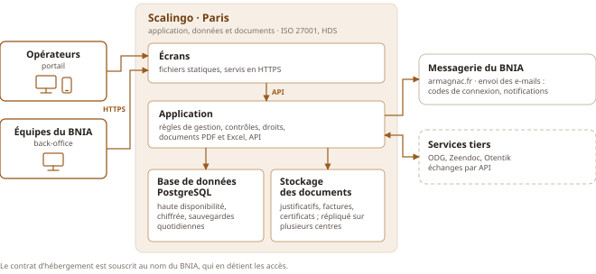

Le BNIA est propriétaire de sa plateforme, de son code comme de ses données. Elle est construite pour pouvoir évoluer sans tout reprendre. Elle est hébergée en France chez Scalingo, un hébergeur certifié ISO 27001 avec haute disponibilité.
Le BNIA propriétaire de sa plateforme à 100 %
Code source ouvert, sous licence libre européenne EUPL 1.2, et le BNIA titulaire des droits sur le code développé pour lui : il peut le confier à tout autre prestataire, à tout moment, sans rien racheter.
Toutes les données téléchargeables depuis le back-office, à tout moment et sans rien demander à personne : copie intégrale de la base de données dans un format standard (PostgreSQL), et de tous les documents déposés.
Documentation technique détaillée et guide utilisateur livrés avec chaque module.
La reprise de l’application par un autre prestataire est facilitée par la manière dont le code est construit : une architecture contrôlée automatiquement, et une couverture large de tests automatisés. Chaque règle de gestion est reliée à au moins un test qui porte son identifiant : on peut vérifier, règle par règle, ce qui est livré. Ces principes sont au cœur de la philosophie open source, où l’objectif est la continuité de l’évolution des logiciels au fil des générations.
Côté code : une application qui évolue facilement
La plateforme est découpée en modules métier : opérateurs, DSM, export, facturation, contrats, messagerie… Chaque module porte ses propres règles de gestion et ses propres données, et ne communique avec les autres que par des échanges codifiés.
À l’intérieur de chaque module, les règles de gestion sont au centre, isolées de la technique : les écrans, la base de données et les services extérieurs (Zeendoc, Otentik, l’ODG) s’y branchent comme sur des prises. C’est ce qu’on appelle une architecture modulaire et découplée. Concrètement :
Si les règles de la DSM changent, seul le module DSM est modifié. Les autres modules n’y voient aucune différence, et leurs tests automatisés le confirment.
Pour ajouter la signature électronique, il suffit de brancher un nouveau connecteur vers un service de signature : les règles de gestion des contrats ou des déclarations ne changent pas.
Si le BNIA change de prestataire pour l’archivage ou les certificats, seul le connecteur concerné est remplacé.
Un choix de technologies standard et éprouvées
Des technologies très répandues, pour qu’un autre prestataire puisse reprendre le projet sans difficulté :
Choix
Pourquoi
Écrans
React
La technologie la plus utilisée au monde pour construire des écrans web : un large vivier de développeurs et un écosystème riche, maintenu sur le long terme.
Serveur
Java, Spring Boot
Parmi les technologies serveur les plus répandues en entreprise : éprouvée depuis plus de vingt ans, robuste pour les calculs, les contrôles réglementaires et la sécurité.
Base
PostgreSQL
Libre et sans licence à payer, reconnue pour sa fiabilité, et la base de données la plus utilisée par les développeurs.
Documents
Stockage objet compatible S3
Le standard du marché pour les fichiers : les documents sont conservés à part des données, et peuvent changer d’hébergeur sans transformation.
Côté infrastructure : hébergement et exploitation

Un seul hébergeur, français : Scalingo, certifié ISO 27001 et HDS, avec données à Paris, base en haute disponibilité, sauvegardes quotidiennes et restauration à un instant donné.
Documents déposés (justificatifs, factures, certificats) conservés dans un stockage objet à Paris, séparé de la base de données et répliqué sur plusieurs centres de données.
E-mails envoyés par la messagerie du BNIA, depuis son domaine armagnac.fr : l’opérateur reconnaît l’expéditeur, et aucun prestataire d’envoi supplémentaire n’est nécessaire.
Dimensionnée pour les volumes annoncés par le BNIA, avec une large marge, y compris aux pointes de mars et de fin de mois : 640 opérateurs, environ 2 600 DSM, 1 500 factures, 500 certificats export et 190 contrats par an.
Supervision et mises à jour de sécurité assurées dans le cadre de la maintenance (section 7).
Contrat d’hébergement au nom du BNIA, qui règle directement les factures (environ 80 € HT par mois) : il détient les accès, je les administre pour son compte.
Côté sécurité : sécurité et données personnelles
Connexion protégée : mot de passe renforcé obligatoire, double authentification simple à l’usage (« se souvenir de cet appareil »), blocage après trois échecs, journal des connexions.
Chacun ne voit que ce qui le concerne : les droits sont vérifiés par le serveur à chaque action. Un opérateur n’accède jamais aux données d’un autre.
Traçabilité : chaque saisie, correction et validation garde son auteur et sa date. On sait toujours d’où vient un chiffre.
Chiffrement des échanges (HTTPS) et des données stockées chez l’hébergeur ; mots de passe jamais conservés en clair.
RGPD : données hébergées en France et limitées au nécessaire ; le BNIA contracte directement avec l’hébergeur, et je l’accompagne dans la tenue de son registre des traitements.